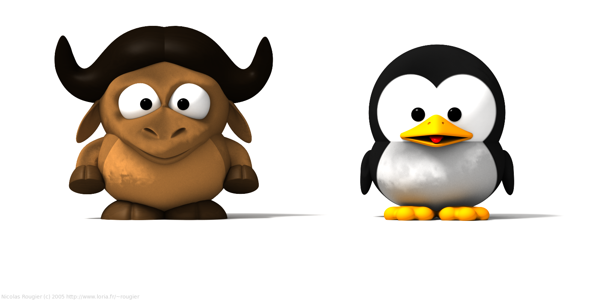
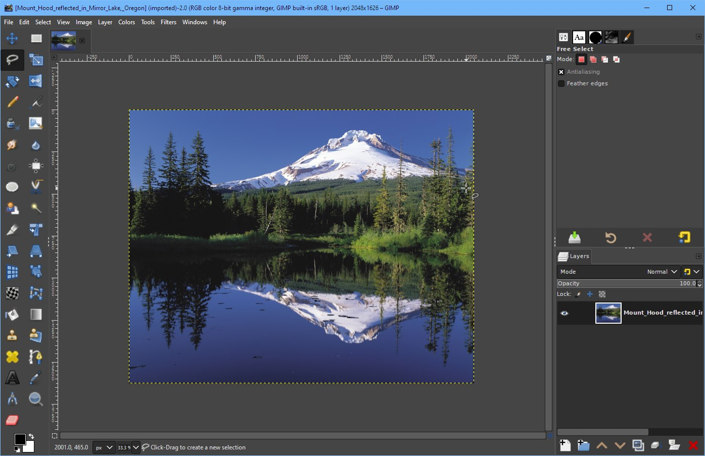
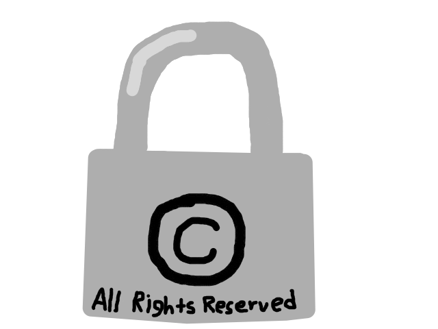
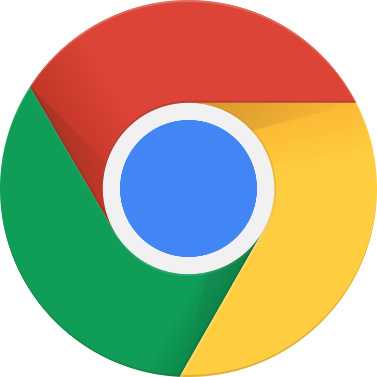
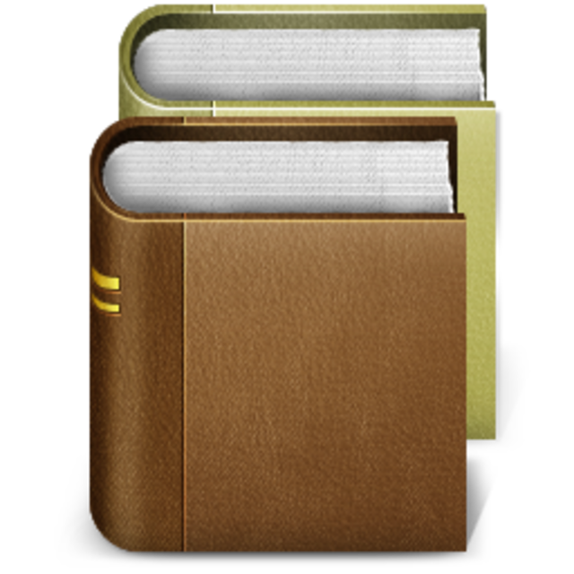

For the Recess Hacks hackathon.
Note: best viewed on a landscape screen that is at least 1280 x 720.
What can I do to help the Free Software movement?
Sources
Free software is simply software that respects your freedom.
"Free" in free software does not mean zero price, although most free software comes free of charge.
So, you can also say "libre" software to say that it is about liberty, not price.
With free software, you can trust that the software isn't doing anything malicious, because all of the source code can be inspected by any person.
😲 Fact: the word "libre" means "free" in Spanish and French.

In order for a computer program to be considered free software, it must have the four freedoms...
If a computer program has these freedoms, that means the users control the program.

There are many computer programs that are in fact free software. Here are some examples of great Free Software, some of you might have one or more of these software installed on your computer (or have used before):
Fact: GNU stands for "GNU's Not Unix!"

When a computer program does not adequately have the four freedoms, it is considered proprietary.
In a proprietary computer software, the software, along with its developers, controls the users. This means that it can do malicious things to the users.
gnu.org's Malware directory lists many hundreds of malicious functionalities that a lot of proprietary software does to their users (such as surveillance, censorship, DRM, etc.)

Google Chrome, a proprietary spyware web browser.
Here are some examples of proprietary software that should be avoided. Instead, you should use free libre alternatives which respect your freedom.
If you can, then you should unplug from (i.e, not use)...
* = best, most private alternative is meeting with other people in real life, if you are doing the right things to combat the spread of COVID-19 and all of its variants.
Of course, there are many other proprietary programs (such as Facebook and all Facebook services like Instagram) which you should unplug from in order to protect your freedoms and improve your privacy.
So what? I've got nothing to hide!
You will soon realize that privacy cannot be sacrificed over convenience.
Big Tech is making proprietary services that seem very appealing, to get as many people using them as possible (for example, Google Search).
Eventually, once there is no competition to proprietary services offered by Big Tech, Big Tech can then start abusing their users by, for example, charging users with fees or mining massive troves of data off your online activities. (Google does the latter every day, by the way)
This is the ultimate goal of Big Tech: to eventually become monopolies and spy on everybody for profit.
Spread the word about the free software movement and how free software gives you more freedom, so you can help liberate other people from proprietary software.
Encourage the TDSB to further improve the education system by switching to teaching using only free software that respects the users freedom and privacy.
There are also some additional useful resources that you can share with other people.

Free Software for Education - must read for students, teachers, and school admins
Teachers: Help Your Students Resist Zoom - again, a must read
Why Schools Should Exclusively Use Free Software - by the founder of the free software movement, Richard Stallman.
How Much Surveillance Can Democracy Withstand?
Free software, free society: Richard Stallman at TEDxGeneva 2014 - Invidious is a free and open source YouTube proxy with no ads or tracking.
More Free Software Resources by the Free Software Foundation
Q: Why are you using Windows, a proprietary operating system?
A: Because my parents force me to use Windows, they do not care about privacy and they are fans of this bloated spyware operating system. Otherwise, I would probably be using a stable, superior Linux distro such as Pop!_OS.
Information sources are ordered, by alphabetical order of the titles of each website listed below.
Free Software Is Even More Important Now
Image sources are ordered based on how they are ordered from top to bottom on this website.
{kind=link}